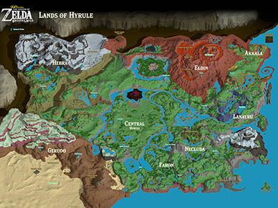

Breath of the Wild
Link is the main character in Nintendo's popular Legend of Zelda franchise. Link is a swordsman who saves the princess of Hyrule Zelda from the evil Ganondorf. The Character lives in a world called Hyrule which in Breath of the wild is in the center of the map with the cold Hebra mountains northwest and Gerudo Desert southeast, The fiery mountain of Eldin northeast and Lanary mountain southeast.
Link is a strong character, fearless and always willing to put others ahead of his own. Link in the game chooses not to speak, which is later reviled in breath of the wild as to why, He feels he must carry the burden of a hero in silence. Link takes his job of being Zeldas appointed knight very seriously going as far as to follow her no matter where to help protect her from those who wish to do her harm.
Link is good at a numerous amount of skills archery, sword skills, problem solving skills. The trifores of Courage also helps him with enhancing his natural abilities. The main source of his powers, however, come from the Old Champions' abilities, after freeing them from their respective Divine Beasts. Vah Ruta, Vah Rudania, Vah Medoh, Vah Naboris link is able to gain their gifts to help him save Zelda.
Link has many Friends in Breath of the Wild and many of his old close friends include Zelda, Impa from Kakariko. The Revali and Teba from Rito Village, Daruk and Yunobo from Goron City, Urbosa and Riju from Gerudo Town, Mipha and Sidon from Zora's Domain.
After the death of the Old Champion of Hyrule Link heads out to find the next generation to help him re- conquer the divine beasts that were under Ganon's control.